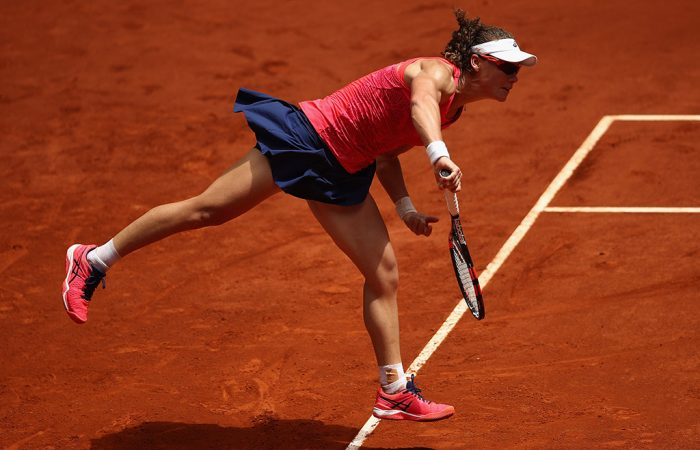

TENNIS

Tennis is a racket sport that can be played individually against a single opponent (singles) or between two teams of two players each (doubles). Each player uses a tennis racket that is strung with cord to strike a hollow rubber ball covered with felt over or around a net and into the opponent's court. The object of the game is to play the ball in such a way that the opponent is not able to play a valid return. The player who is unable to return the ball will not gain a point, while the opposite player will.
Tennis is an Olympic sport and is played at all levels of society and at all ages. The sport can be
played by anyone who can hold a racket, including wheelchair users. The modern game of tennis
originated in Birmingham, England, in the late 19th century as "lawn tennis".[1] It had close
connections both to various field ("lawn") games such as croquet and bowls as well as to the older
racket sport of real tennis. During most of the 19th century, in fact, the term "tennis" referred to
real tennis, not lawn tennis: for example, in Disraeli's novel Sybil (1845), Lord Eugene De Vere
announces that he will "go down to Hampton Court and play tennis."[2]
The rules of tennis have changed little since the 1890s. Two exceptions are that from 1908 to 1961
the server had to keep one foot on the ground at all times, and the adoption of the tiebreak in the
1970s. A recent addition to professional tennis has been the adoption of electronic review
technology coupled with a point challenge system, which allows a player to contest the line call of a
point, a system known as Hawk-Eye.Tennis is played by millions of recreational players and is also
a popular worldwide spectator sport. The four Grand Slam tournaments (also referred to as the
"Majors") are especially popular: the Australian Open played on hard courts, the French Open
played on red clay courts, Wimbledon played on grass courts, and the US Open played also on hard
courtsGrand Slam tournamentsThe four Grand Slam tournaments are considered to be the most
prestigious tennis events in the world. They are held annually and comprise, in chronological order
, the Australian Open, the French Open, Wimbledon, and the US Open. Apart from the Olympic
Games, Davis Cup, Fed Cup, and Hopman Cup, they are the only tournaments regulated by the
International Tennis Federation (ITF).[75] The ITF's national associations, Tennis Australia
(Australian Open), the Fédération Française de Tennis (French Open), the Lawn Tennis Association
(Wimbledon) and the United States Tennis Association (US Open) are delegated the responsibility to
organize these events.[75]Aside from the historical significance of these events, they also carry
larger prize funds than any other tour event and are worth double the number of ranking points to
the champion than in the next echelon of tournaments, the Masters 1000 (men) and Premier events
(women).[76][77] Another distinguishing feature is the number of players in the singles draw. There
are 128, more than any other professional tennis tournament. This draw is composed of 32
seeded players, other players ranked in the world's top 100, qualifiers, and players who receive
invitations through wild cards. Grand Slam men's tournaments have best-of-five set matches while
the women play best-of-three. Grand Slam tournaments are among the small number of events
that last two weeks, the others being the Indian Wells Masters and the Miami Masters.
Currently, the Grand Slam tournaments are the only tour events that have mixed doubles contests.
Grand Slam tournaments are held in conjunction with wheelchair tennis tournaments and junior
tennis competitions. These tournaments also contain their own idiosyncrasies. For example, players
at Wimbledon are required to wear predominantly white. Andre Agassi chose to skip Wimbledon
from 1988 through 1990 citing the event's traditionalism, particularly its "predominantly white"
dress code.[78] Wimbledon has its own particular methods for disseminating tickets, often leading
tennis fans to follow complex procedures to obtain tickets.[79]Grand Slam tournaments
The four Grand Slam tournaments are considered to be the most prestigious tennis events in the
world. They are held annually and comprise, in chronological order, the Australian Open, the
French Open, Wimbledon, and the US Open. Apart from the Olympic Games, Davis Cup, Fed Cup,
and Hopman Cup, they are the only tournaments regulated by the International Tennis Federation
(ITF).[75] The ITF's national associations, Tennis Australia (Australian Open), the Fédération
Française de Tennis (French Open), the Lawn Tennis Association (Wimbledon) and the United States
Tennis Association (US Open) are delegated the responsibility to organize these events.[75]
Aside from the historical significance of these events, they also carry larger prize funds than any
other tour event and are worth double the number of ranking points to the champion than in the
next echelon of tournaments, the Masters 1000 (men) and Premier events (women).[76][77] Another
distinguishing feature is the number of players in the singles draw. There are 128, more than any
other professional tennis tournament. This draw is composed of 32 seeded players, other players
ranked in the world's top 100, qualifiers, and players who receive invitations through wild cards.
Grand Slam men's tournaments have best-of-five set matches while the women play best-of-three.
Grand Slam tournaments are among the small number of events that last two weeks, the others
being the Indian Wells Masters and the Miami Masters.Currently, the Grand Slam tournaments are
the only tour events that have mixed doubles contests. Grand Slam tournaments are held in
conjunction with wheelchair tennis tournaments and junior tennis competitions. These tournaments
also contain their own idiosyncrasies. For example, players at Wimbledon are required to wear
predominantly white. Andre Agassi chose to skip Wimbledon from 1988 through 1990 citing the
event's traditionalism, particularly its "predominantly white" dress code.[78] Wimbledon has its
own particular methods for disseminating tickets, often leading tennis fans to follow complex
procedures to obtain tickets.[79]s